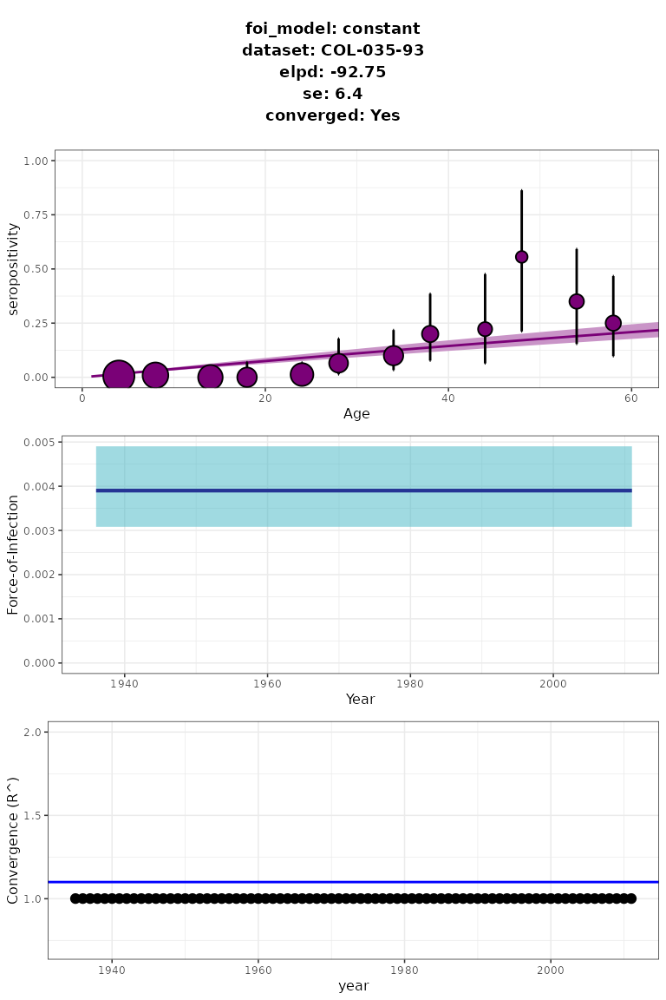

An introduction to serofoi
serofoi.RmdUsage
When informing the public health response we want to know how many individuals have been infected up to a certain point in time, which relates to the level of immunity for a given pathogen in a population. Based on this information, it is possible to estimate the speed at which susceptible individuals have been infected over time in that population. We call this parameter the Force-of-Infection (FoI). To estimate this parameter serofoi uses a suit of catalytic models.
For which diseases is this package?
serofoi is a package designed to be used for any infectious disease for which we could measure population immunity using IgG antibodies, such as: arboviruses (dengue, Zika, chikungunya), Chagas, alphaviruses, among many others. However, not for all diseases serofoi may be applicable with its current features. Please check the model assumptions below for each case.
What is a serosurvey?
A serosurvey is an epidemiological study that involves the collection and analysis of blood samples from a representative population to determine the prevalence of antibodies against a specific pathogen. These antibodies are typically produced by the immune system in response to an infection, and their presence in the blood can serve as an indicator of previous exposure to the pathogen. Serosurveys are valuable tools for public health researchers and policymakers, as they provide insights into the spread of infections within communities, the proportion of individuals with immunity, and the effectiveness of vaccination programs. Serosurveys can help guide targeted interventions, inform disease control strategies,and evaluate the success of public health measures.
What type of serosurvey data is needed to use the package?
This package is designed to be used for serosurveys that follow these inclusion criteria:
- Are population-based cross-sectional surveys (not hospital-based).
- Specify individuals’ age or age group.
- Indicate diagnostic test(s) used. The current version of serofoi only applies to IgG antibodies.
- Identify the location and date (year) of sample collection.
What we assume about the biological process
Current version of serofoi includes the following assumptions on the underlying biological process:
- There is no seroreversion (from positive to negative). It means IgG antibodies are life-long with no waning immunity. This may not be the case for several pathogens. The inclusion of seroreversion in the modelling process is planned for future versions of serofoi.
- There is no age-dependency. This may not be the case for several pathogens. This feature is planned for future versions of serofoi.
- There is no impact from migration processes in the sampled population, which means the model is not suited for a situation with high levels of migration.
- There are no differences in the mortality rate of infected versus susceptible individuals. This may be a limitation for situations with a high infection fatality rate, such as Ebola.
The bayesian statistical framework
To assess how well the mathematical representation of the different FoI models describes the seroprevalence data, we implement a fitting process that relies on a Bayesian framework. The priors and upper priors for each model indicate the assumed trajectory of the FoI (either constant or time-varying). serofoi provides a set of Bayesian comparison methods for the user to choose between various possible FoI models (trajectories) that best fit the seroprevalence data. For details see FoI Models.
Modelling the Force-of-infection (FoI)
Is common to assume that the FoI is constant in time. However this is not always the case; serofoi addresses this by enabling the possibility to implement different time-varying models for the FoI and offering tools to compare them to the constant case in order to decide what model fits a serological survey the best.
The integrated dataset serodata_test provides a minimal
example of the input of the package. The following code can be used to
prepare this dataset for model implementation and implements the basic
constant model:
library(serofoi)
# Loading and preparing data for modelling
data(chagas2012)
serodata_test <- prepare_serodata(chagas2012)
# Model implementation
model_constant <- run_seromodel(
serodata = serodata_test,
foi_model = "constant"
)
# Visualisation
plot_seromodel(model_constant,
serodata = serodata_test,
size_text = 6
) For details on the implementation of time-varying models and model comparison see FoI Models.